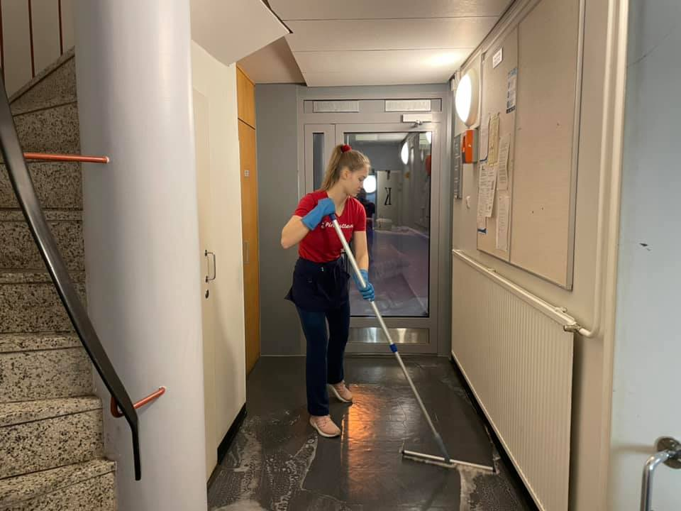

Kierros kohteessa
Käymme läpi porraskäytävät, yhteiset tilat ja taloyhtiön omat painotukset.

Huolehdimme taloyhtiösi porraskäytävien, saunatilojen ja muiden yleisten tilojen siisteydestä. Säännöllinen ja huolellinen siivous pidentää pintamateriaalien ikää ja lisää asukkaiden asumisviihtyvyyttä merkittävästi.
Sovimme taloyhtiön kanssa tilat, käyntirytmin ja erityistä huomiota vaativat kohdat. Työohje pysyy selkeänä myös tarpeiden muuttuessa.
Käymme läpi porraskäytävät, yhteiset tilat ja taloyhtiön omat painotukset.
Määritämme tilojen käyttöön ja vuodenaikoihin sopivan säännöllisen rytmin.

Kohde hoidetaan sovitun työohjeen mukaan ja poikkeamista ilmoitetaan.

Palautteet ja kausittaiset lisätarpeet päivitetään suoraan yhteyshenkilön kanssa.

Säännöllinen työ pitää yhteiset tilat viihtyisinä ja auttaa pintamateriaaleja kestämään käytössä pidempään.
Kerro taloyhtiön koosta ja yhteisistä tiloista. Teemme ehdotuksen selkeästä siivousrytmistä.